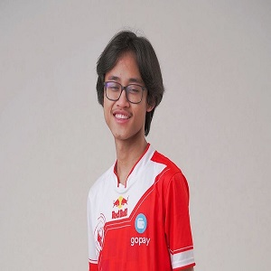

Made Bagus Prabaswara atau lebih dikenal sebagai BTR Luxxy adalah pro player PUBG Mobile yang diakui kemampuannya secara global. Terutama sebagai sniper yang jadi andalan Bigetron Red Aliens. Simak profil dan biodata BTR Luxxy berikut ini. BTR Luxxy merupakan salah satu ikon dari tim Bigetron Esports, terutama untuk divisi PUBG Mobile. Luxxy merupakan kembaran dari BTR Zuxxy yang juga terkenal sebagai pro player Indonesia. Keduanya dijuluki ‘Duo Tachibana’ atau ‘Tachibana Bersaudara’ ini memiliki skill mematikan dalam game PUBG Mobile. Selain menjadi pro player, ia juga aktif menjadi YouTuber gaming. Pria asal Bali ini merupakan seorang Pro Player PUBG Mobile yang kini tergabung dalam esport Bigetron Red Alien (RA). Luxxy bersama kembarannya Zuxxy menjadi gamer PUBG Mobile yang sudah diaakui dunia berkat menjuarai kompetisi PUBG Mobile tingkat dunia. Prestasi BTR Luxxy 2018 1st PINC Finals, 2019 2nd PMCO Spring Split SEA, 1st PMCO Fall Split Global Finals, 2020 1st PMPL Spring Split Indonesia League, 1st PMPL Spring Split Indonesia Finals, 2nd PMPL Spring Split SEA League, 1st PMWL Season 0 League, 1st PMPL Fall Split Indonesia League, 1st PMPL Fall Split SEA, 2nd PMGC Season 0 League, 5th PMGC Season 0 Finals.
-

Luxxy
Made Bagus Prabaswara (BTR Zuxxy)